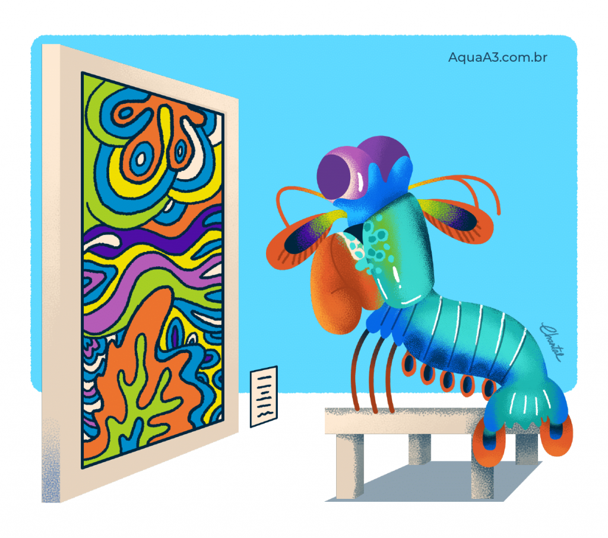

Stomatopoda
Informações Gerais
| Reino | Filo | Subfilo | Classe | Subclasse | Ordem |
| Animalia | Arthropoda | Crustacea | Malacostraca | Hoplocarida | Stomatopoda |
Algumas curiosidades sobre o Stomatopoda
Foto via: AquaA3Visão
Esses animais possuem o mais complexo sistema de visão de cores do mundo animal, pois enxergam 12 cores primárias, correspondentes aos 12 pigmentos distintos presentes em sua retina.
Nossos olhos possuem três tipos desses receptores - que correspondem à luz azul, verde e vermelha -, que nos permitem perceber o espectro de cores que vemos. Os cães contam com apenas dois tipos de cones (verde e azul), e é por isso que eles vêm tons de azul, verde e um pouco de amarelo. Muitos anfíbios, répteis, aves e insetos possuem quatro tipo de cones, o que significa que espécies dessas classes conseguem ver cores que o nosso cérebro é incapaz de processar. Algumas espécies específicas de borboletas e possivelmente pombos possuem cinco cones de percepção de cor, o que aumenta ainda mais a quantidade de pigmentos que eles são capazes de perceber. O sistema de visão dos estomatópodes possui doze cones sensíveis à luz e outros quatro que filtram a luz (16 cones no total), o que lhes permite ver cores polarizadas e imagens multiespectrais.[6]
Como cada cone pode ver cerca de 100 cores, os estomatópodes são capazes de ver 1024 cores, ou seja, 1 septilhão de cores. Em comparação, o olho humano vê 106 cores, ou seja, 1 milhão de cores apenas. A visão dos estomatópodes é sensível à luz ultravioleta, mas ainda é desconhecido se ela pode distinguir a luz infravermelha.
 Foto via: AquaA3
Foto via: AquaA3
Soco
O Stomatopoda possui dois apêndices bem desenvolvidos (semelhantes a um martelo), chamados de Porretes de Dáctilo.
Com essas “super patas” o animal espanca e esmaga suas presas em uma intensidade de aproximadamente 60 kg/cm² (daí o motivo de um de seus nomes ser lagosta-boxeadora).